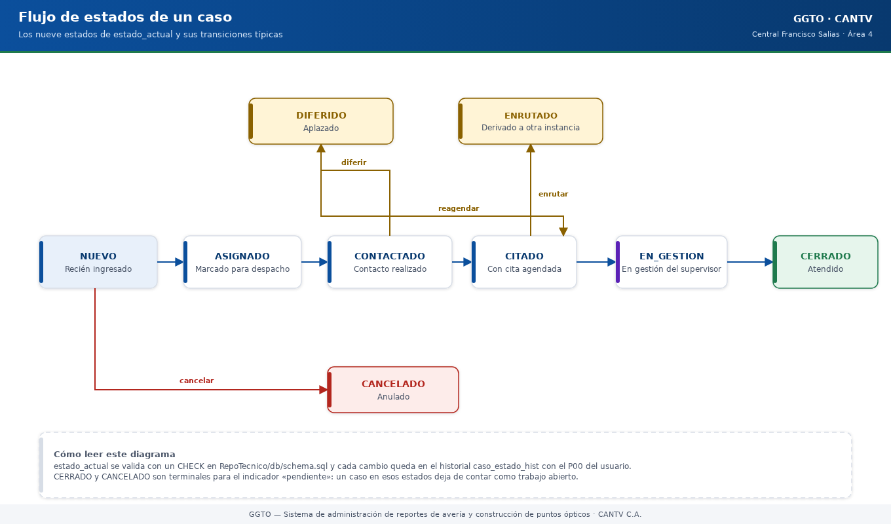
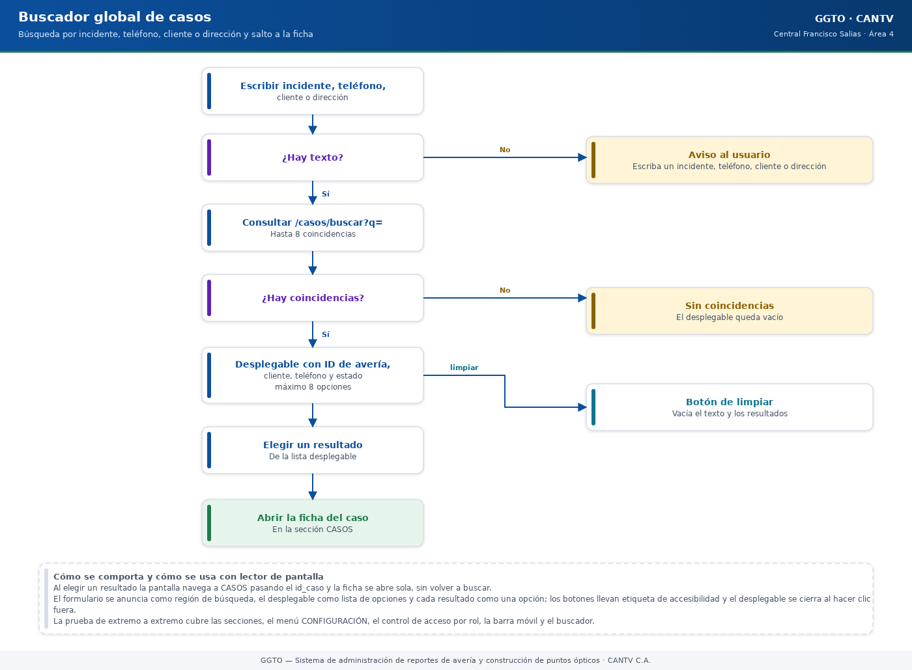

Sistema de administración de reportes de avería y construcción de puntos ópticos
Manual literal · ImplementaciónManual técnico — Panel y gestión de casos
Manual para todo público. Explica, en lenguaje sencillo, cómo funcionan el PANEL y el módulo CASOS de GGTO, el Sistema de administración de reportes de avería y construcción de puntos ópticos de CANTV C.A., Central Francisco Salias (Área 4). Este manual no promete funciones que todavía no existen: cuando algo está pendiente, lo dice con claridad.
Manual para todo público. Explica, en lenguaje sencillo, cómo funcionan el PANEL y el módulo CASOS de GGTO, el Sistema de administración de reportes de avería y construcción de puntos ópticos de CANTV C.A., Central Francisco Salias (Área 4). Este manual no promete funciones que todavía no existen: cuando algo está pendiente, lo dice con claridad.
1Empezar en 5 minutos
Si es tu primer día con el PANEL y CASOS, con estos cinco pasos ya puedes ubicarte.
- Entra al sistema. Inicia sesión con tu P00 (tu código de personal, por ejemplo
P00123) y tu clave. Al entrar verás el PANEL, que es la pantalla raíz. - Mira la barra superior. Ahí están el buscador global, el botón «Agregar caso» y el menú de usuario. Ya no existe menú lateral: las secciones viven en esa barra.
- Busca un caso. Escribe en el buscador global un número de incidente (
id_averia), un teléfono, un nombre de cliente o una dirección. También puedes usar la «Búsqueda rápida de casos» del PANEL porid_averiao teléfono. - Abre la ficha y revisa los estados. Al elegir un resultado se abre la ficha del caso en
CASOS. Los estados posibles son nueve:
NUEVO,ASIGNADO,CONTACTADO,CITADO,DIFERIDO,EN_GESTION,ENRUTADO,CERRADOyCANCELADO. - Cambia el estado y deja el motivo. Si tu rol lo permite (
ADMINoSUPERVISOR), edita el caso, escribe el motivo y guarda. Cada cambio queda registrado en la bitácora (el historial), con tu P00 y la fecha y hora.
2Visión general (PANEL y CASOS, RF-30..RF-33)
PANEL y CASOS son la cara operativa del universo de averías: por aquí se busca, se lee, se crea y se actualiza un caso.
- PANEL sirve para buscar un caso por
id_averia(el número de incidente) o porteléfono, para actualizar casos y para dar de alta casos nuevos de forma manual. - CASOS guarda la data principal de los casos y su resolución. Distingue el tipo de trabajo (Construcción o Reparación) y la categoría del cliente (Residencial, Empresa o Referidos).
Los requisitos que cubre este módulo son:
| Requisito | Descripción en palabras sencillas |
|---|---|
| RF-30 | Buscar un caso por id_averia o por teléfono y mostrar su ficha completa. |
| RF-31 | Actualizar o editar un caso: contacto, dirección, clasificación, estado y campos de gestión. |
| RF-32 | Dar de alta un caso nuevo de forma manual. |
| RF-33 | Ver el listado con filtros (central, sector, estado, tipo y fechas), abrir el detalle y registrar la resolución. |
| RNF-12 | Dejar trazabilidad y auditoría de todos los cambios: quién cambió qué y cuándo. |
El conjunto de direcciones del módulo se publica bajo /api/v1/casos y responde a los
requisitos RF-30, RF-31, RF-32 y RF-33, además de la bitácora del RNF-12.
2.1Permisos
Para escribir (crear o editar) se necesita el rol ADMIN o SUPERVISOR. Para leer (listar, buscar, ver la ficha y ver el historial) basta con estar autenticado.
En la práctica esto significa que:
- El rol TECNICO puede leer, pero no puede crear ni editar casos.
- El rol SUPER (Super Usuario) puede hacer todo, siempre.
Cuando alguien intenta escribir sin permiso, el sistema rechaza la operación. Este comportamiento está fijado por una prueba automática que verifica justamente que un técnico puede leer pero no escribir.
3Estados del caso (D-29) y ciclo de vida
3.1Catálogo de estados
La decisión D-29 fijó nueve estados «fijos en el DDL» (el DDL es el archivo que define las tablas de la base de datos). La lista es cerrada: no se pueden inventar estados nuevos.
| # | Estado | Qué significa en la operación |
|---|---|---|
| 1 | NUEVO |
Estado inicial cuando se da de alta un caso manual. |
| 2 | ASIGNADO |
El caso quedó marcado como asignado en el listado. |
| 3 | CONTACTADO |
Ya se contactó al cliente. |
| 4 | CITADO |
Tiene una cita propuesta o confirmada. |
| 5 | DIFERIDO |
El caso quedó aplazado. |
| 6 | EN_GESTION |
Está en gestión del supervisor. |
| 7 | ENRUTADO |
Fue derivado a otra instancia o cola. |
| 8 | CERRADO |
Cerrado. Deja de contar como «pendiente». |
| 9 | CANCELADO |
Cancelado. También deja de contar como «pendiente». |
3.2Restricciones en base de datos
La base de datos valida exactamente la misma lista de nueve estados y, si no se indica otro,
asigna NUEVO por defecto. Es decir, hay tres capas que dicen lo mismo: la base de datos, el
modelo del backend y el esquema de validación de la API.
Consecuencia práctica: si alguien intenta enviar un estado que no está en la lista, el sistema responde 422 (datos inválidos). Una prueba automática comprueba ese rechazo.
3.3Ciclo de vida observado
El recorrido normal de un caso es así:
- El caso nace de dos maneras: por la carga del archivo CSV de averías (nace en estado
NUEVO) o por alta manual desde el PANEL (también enNUEVO, y con la primera fila de bitácora escrita). - El caso se edita con una actualización parcial. En esa edición se puede cambiar el estado.
- Cada cambio real de estado se apila en la tabla
caso_estado_hist(la bitácora) y se puede consultar por el historial del caso. - Los estados
CERRADOyCANCELADOson terminales a efectos del indicador «pendiente» y también del cálculo de fallas masivas: un caso cerrado o cancelado ya no se cuenta como trabajo pendiente.

Código del gráfico (Mermaid)
flowchart LR
A["NUEVO<br/>(carga CSV o alta manual)"] --> B["ASIGNADO"]
B --> C["CONTACTADO"]
C --> D["CITADO"]
C --> E["DIFERIDO"]
B --> F["EN_GESTION<br/>(supervisor)"]
F --> G["ENRUTADO<br/>(derivado a otra instancia)"]
D --> H["CERRADO"]
F --> H
B --> I["CANCELADO"]
H --> J["Ya no cuenta<br/>como pendiente"]
I --> J4Endpoints
El módulo agrupa seis operaciones bajo /api/v1/casos. Un endpoint es una dirección del
sistema a la que la pantalla web le pide o le envía datos.
4.1GET /api/v1/casos (filtros y paginación)
Devuelve el listado de casos en páginas. La respuesta trae los elementos de la página
(items), el total de coincidencias (total), la página actual (page), el tamaño de página
(page_size) y cuántas páginas hay (pages).
4.1.1Filtros aceptados
Estos son los filtros que el backend acepta. Todos son opcionales y se pueden combinar.
| Parámetro | Tipo | Cómo se comporta |
|---|---|---|
q |
texto | Busca por parecido en id_averia, telefono, nombre_cliente y direccion. |
id_averia |
texto | Busca por parecido parcial. |
telefono |
texto | Busca por parecido parcial. |
id_central |
entero | Coincidencia exacta. |
id_sector |
entero | Coincidencia exacta. |
id_causa |
entero | Coincidencia exacta. |
id_lote_ingesta |
entero | Coincidencia exacta. |
estado_actual |
texto | Coincidencia exacta con uno de los nueve estados. |
tipo_caso |
texto | Coincidencia exacta. |
categoria |
texto | Coincidencia exacta. |
origen |
texto | Coincidencia exacta. |
en_gestion_supervisor |
booleano (sí/no) | Coincidencia exacta. |
es_falla_masiva |
booleano (sí/no) | Coincidencia exacta. |
desde / hasta |
fecha y hora | Rango sobre la fecha del reporte. |
4.1.2Paginación y orden
- La página 1 es la primera; no se admiten páginas menores que 1.
- El tamaño de página por defecto es 25. El mínimo es 1 y el máximo es 200.
- El total de coincidencias se cuenta completo, y el número de páginas se obtiene dividiendo el total entre el tamaño de página.
- El orden es por fecha de reporte descendente (lo más reciente primero), con las fechas
vacías al final. Si dos casos tienen la misma fecha, se desempata por
id_casodescendente (el más nuevo primero). - Una prueba automática verifica que el listado quede ordenado por fecha descendente.
4.1.3Iconos de estado calculados
Además de los datos del caso, el sistema calcula cuatro marcas o «iconos» que la pantalla usa para pintar el estado. No se guardan: se deducen al vuelo.
| Icono | Condición para que se encienda |
|---|---|
pendiente |
El estado no es CERRADO ni CANCELADO. |
asignado |
El caso ya está en un despacho, o su estado es ASIGNADO. |
citado |
Tiene una cita en estado PROPUESTA o CONFIRMADA. |
gestion |
Está marcado en_gestion_supervisor, su estado es EN_GESTION o su despacho dice GESTIONADO. |
4.2GET /api/v1/casos/buscar
Es la dirección que usan el buscador global de la barra superior y la búsqueda rápida del
PANEL. Exige enviar al menos uno de estos tres criterios: q, id_averia o telefono. Si no
se envía ninguno, responde 422 con el mensaje:
«Indique
q,id_averiaotelefonopara buscar»
Una prueba automática fija ese comportamiento.
| Parámetro | Cómo se comporta |
|---|---|
q |
Busca por parecido en avería, teléfono, cliente y dirección. |
id_averia |
Igualdad exacta, después de quitar espacios al principio y al final. |
telefono |
Igualdad, o búsqueda por parecido parcial. |
limite |
Cuántos resultados devolver: 20 por defecto, entre 1 y 100. |
Cuando se combinan varios criterios, se aplica «alguno de ellos» (una condición O). Con un solo criterio, se usa directamente. El orden es por fecha de reporte descendente, con las fechas vacías al final.
4.3POST /api/v1/casos (alta manual REF-...)
Da de alta un caso nuevo de forma manual. Responde 201 Created (creado) y exige rol de
escritura (ADMIN o SUPERVISOR). La secuencia del alta es:
- Se resuelve la central indicada o, si no se indica, la central configurada.
- Si el cuerpo no trae
id_averia, el sistema lo genera con la función de base de datosgenerar_id_averia_ref. - Si el
id_averiaya existe, se rechaza con 409 (conflicto): no se permiten duplicados. - Se respeta el
id_sectorenviado, validando que exista (si no existe, 404). Si no se envía sector, el sistema lo deduce automáticamente a partir de la dirección. - Si
fecha_reporteviene vacía, se completa con la hora actual. El campo de ayudantes queda como lista vacía. - Se crea el caso con
origen="MANUAL",estado_actual="NUEVO", el código y el nombre de la central y el P00 del usuario que lo creó. - Se escribe la primera fila de la bitácora con el motivo «Alta manual desde PANEL».
4.3.1Verificación
Dos pruebas automáticas respaldan este comportamiento. La primera comprueba que el identificador
generado empieza por REF-2324X-, que el origen es MANUAL, que el estado es NUEVO y que
en_gestion_supervisor es falso. La segunda cubre el caso en que el usuario sí envía un
identificador explícito y el rechazo 409 por identificador duplicado.
4.4GET /api/v1/casos/{id_caso}
Devuelve la ficha completa de un caso, con el nombre del sector y los cuatro iconos de estado. Si el caso no existe, responde 404 con el mensaje «Caso no encontrado». Una prueba automática cubre la ficha y el 404.
4.5PATCH /api/v1/casos/{id_caso} (historial de estado)
Es una edición parcial: solo se aplican los campos que vienen en el cuerpo de la petición. Los campos que no se envían quedan como estaban.
4.5.1Campos con tratamiento especial
| Campo | Qué hace el sistema |
|---|---|
motivo_estado |
Se toma para escribir el motivo en la bitácora; no se guarda como columna del caso. |
estado_actual |
Se procesa con una rutina especial que registra el cambio en la bitácora. |
id_sector |
Se valida contra la tabla de sectores (404 si no existe) y se asigna. |
direccion |
Si no se envió id_sector, dispara la re-sectorización automática. |
El resto de los campos se aplica tal cual, uno por uno.
Observación de mantenimiento. El esquema de edición admite un campo
sector_nombreque no existe como columna de la tabla de casos. Como se aplica de forma genérica, ese valor no se guarda. La pantalla web no lo envía, así que hoy no causa daño; conviene evitarlo en integraciones futuras.
4.5.2Verificación
Una prueba automática comprueba que un cambio a CONTACTADO con motivo queda en la bitácora con
el P00 del usuario, y que repetir el mismo estado no añade una segunda fila (la bitácora es
idempotente).
4.6GET /api/v1/casos/{id_caso}/historial
Primero verifica que el caso exista (si no, 404). Luego devuelve la bitácora de cambios de
estado ordenada por id_hist descendente, es decir, del movimiento más reciente al más
antiguo. Cada fila trae el estado anterior, el estado nuevo, el motivo, el usuario y la fecha
y hora.
5Reglas de negocio
5.1Generación generar_id_averia_ref
Los casos que no vienen de una incidencia de origen (referidos, empresas, gobiernos y altas manuales) reciben un identificador sintético con la forma:
REF-<CÓDIGO_CENTRAL>-<NNNNNN>
Esto lo fija la decisión D-23. La función que lo genera está en la base de datos y funciona así:
- Usa una secuencia llamada
seq_caso_refpara no repetir números. - Toma el
codigo_centralde la tabla de centrales y falla con una excepción si esa central no existe. - Compone el identificador en mayúsculas y con relleno de seis ceros.
El backend la invoca con una consulta directa. El formato observado en las pruebas es
REF-2324X-.
5.2Re-sectorización automática al editar dirección
Cuando una edición incluye direccion y no incluye id_sector, el backend vuelve a
calcular el sector. El cálculo se apoya en los patrones configurados para la central del caso:
- Los patrones se ordenan del más largo al más corto.
- Se admite coincidencia de tres tipos:
CONTIENE(el texto contiene el patrón),EXACTO(coincidencia exacta) yREGEX(expresión regular). - Si ningún patrón coincide, el sector queda vacío (
None).
Una prueba automática parte de un caso sin sector y, al corregir la dirección, obtiene el sector esperado.
5.3Registro en caso_estado_hist
La bitácora aplica una regla de idempotencia (es decir, no duplica registros):
- Si el estado nuevo es igual al actual, no escribe nada y termina.
- Si es distinto, inserta una fila con el estado anterior, el estado nuevo, el motivo y el usuario que hizo el cambio.
- Actualiza el estado actual del caso.
La tabla de bitácora guarda la fecha y hora automáticamente y borra sus filas si se elimina el caso (borrado en cascada). El alta manual es la excepción: escribe la primera fila directamente, porque el caso todavía no tiene estado previo.
6Esquemas y modelo
6.1Esquemas Pydantic (app/schemas/casos.py)
Los esquemas son las reglas de validación que usa la API para leer y escribir datos.
| Esquema | Para qué sirve |
|---|---|
ESTADOS_CASO / EstadoCaso |
El catálogo de los nueve estados y su restricción. |
TIPO_CASO |
Los tipos de trabajo: AVERIA, REPARACION, CONSTRUCCION. |
CATEGORIA |
Las categorías: RESIDENCIAL, EMPRESA, REFERIDO, GOBIERNO. |
ORIGEN |
Los orígenes: INGESTA_CSV, MANUAL, TELEGRAM, MCP_IA. |
CasoOut |
La ficha del caso y cada elemento del listado. |
PaginaCasos |
La respuesta paginada del listado. |
CasoManualCreate |
El cuerpo del alta manual. |
CasoUpdate |
El cuerpo de la edición parcial. |
CasoEstadoHistOut |
Una fila de la bitácora. |
El esquema de salida CasoOut se arma desde el modelo de base de datos y omite a propósito
columnas geográficas y técnicas que no se muestran en la ficha, como capital_estado,
distrito, estado_operativo, extra, dias_area_resolutoria, ups y
codigos_gestionados_venapp. Esa reducción es una decisión de presentación, no una restricción
de la tabla: los datos siguen guardados.
6.2Modelo Caso (app/models/caso_entities.py)
Es la tabla central de casos, con 63 columnas. Es el mapeo depurado del CSV, según la decisión D-27. Sus campos se agrupan en cinco bloques:
| Bloque | Ejemplos |
|---|---|
| Clasificación del sistema | id_averia, origen, tipo_caso, categoria, estado_actual, id_sector, id_lote_ingesta |
| Geografía (filtro de central) | region, municipio, parroquia, codigo_central, nombre_central |
| Contacto y administración | telefono, fecha_reporte, direccion, nombre_cliente |
| Datos técnicos / lógicos | olt, plan, slot, puerto, fat, serial |
| Asignación de origen | reparador_principal, ayudantes (lista en formato JSONB), flota_can |
Detalles importantes:
id_averiaes único y no puede quedar vacío.ayudanteses una lista JSONB que, si no se indica otra cosa, arranca vacía.- La base de datos reproduce la misma estructura con validaciones para
origen,tipo_caso,categoriayestado_actual.
6.3Modelo CasoEstadoHist
Es la bitácora de cambios de estado de un caso (RNF-12). Contiene:
id_hist: identificador de la fila.id_caso: el caso al que pertenece.estado_anterioryestado_nuevo.motivo.usuario.fecha_hora.
La fecha y hora se completa sola con el momento del registro y, si se elimina el caso, la bitácora se borra en cascada.
7Página web CASOS y Panel
7.1CASOS (app/web/src/pages/Casos.tsx)
Es la página más extensa del módulo (964 líneas). Se organiza en tres bloques: filtros y listado, ficha con edición y cambio de estado, e historial.
7.1.1Filtros mostrados
La interfaz ofrece estos filtros: texto libre, estado, clase, tipo, origen, «Cuadrilla 0 (supervisor)» y rango de fechas de reporte. Los catálogos de estados, categorías, tipos y orígenes están declarados en la propia pantalla.
Ojo: la interfaz no muestra los filtros
id_central,id_sector,id_causaniid_lote_ingesta, aunque el backend sí los acepta. Si necesitas filtrar por esos campos, hoy hay que hacerlo por API.
7.1.2Paginación
Los tamaños de página disponibles son 10, 25, 50 y 100, y el valor inicial es 25. La barra inferior muestra el total y la página actual, y ofrece los botones «Anterior» y «Siguiente». Cuando estás en el primer o el último límite, el botón correspondiente queda deshabilitado.
7.1.3Ficha
La ficha se abre al seleccionar cualquier parte del renglón y reparte la información en pestañas: Resumen, Contacto, Datos técnicos, Clasificación, Textos, Resolución e Histórico. Los campos vacíos se muestran como «—». La antigua pestaña Gestión ya no existe.
7.1.4Editar el sector, la cita y la información
- En la pestaña Clasificación, el botón Editar del título habilita el formulario con el Sector (incluye la opción «Sin sector»), la Fecha de cita y la Información (hasta 200 caracteres). El Supervisor, el Administrador y el Super Usuario pueden así asignar o cambiar el sector de un caso.
- Al guardar, el sistema envía únicamente esos campos; si se corrige la dirección sin enviar sector, el sector se recalcula solo.
- El botón Editar vuelve a abrir el formulario las veces que haga falta, incluso después de guardar.
7.1.5Cambio de estado
- Desde D-76 la ficha web no permite cambiar el estado: el formulario se retiró junto con la pestaña Gestión.
- El movimiento de estado sigue disponible en la operación del API para otros clientes (la APK).
7.1.6Historial
Se muestra en una tabla con estado anterior, estado nuevo, motivo, usuario y fecha y hora, bajo la ficha. Se carga con la operación de historial del cliente de API.
7.2PANEL (app/web/src/pages/Panel.tsx)
El PANEL es la página raíz. Muestra un resumen con seis tarjetas:
- Tablas.
- Centrales.
- Roles.
- Cuadrillas.
- Causas.
- Parámetros.
Además, identifica la sesión con el nombre completo del usuario y su rol.
Incluye una «Búsqueda rápida de casos» por ID de avería o teléfono. Al enviarla, la pantalla navega a CASOS llevando el término de búsqueda; CASOS lo recoge y lo usa como filtro inicial.
7.3Modal «Agregar caso» (app/web/src/components/ModalCaso.tsx)
El botón «Agregar caso» de la barra superior abre este modal flotante (una ventana que se superpone a la página). Sus rasgos son:
| Rasgo | Comportamiento |
|---|---|
| Foco inicial | Al abrirse, enfoca el primer control del modal. |
Cierre con Escape |
La tecla Escape cierra el modal. |
| Trampa de foco | La tecla Tab va ciclando dentro del modal, sin escaparse al fondo. |
| Cierre por fondo | Hacer clic en el fondo oscuro cierra el modal; hacer clic dentro de la caja, no. |
| Alta normal | Exige al menos uno de estos datos: nombre, teléfono, dirección o problema. |
| Alta especial | Cambia a la operación de caso especial e incluye el solicitante. |
El caso normal se crea con la operación habitual y, cuando corresponde, el resultado destaca en
color el identificador REF-….
Aunque compartan el modal, los casos especiales pertenecen a otro módulo (
/api/v1/casos-especiales). Este manual solo describe el punto de entrada; el detalle está en el manual de casos especiales.
8Buscador global de la barra superior (D-57)
La decisión D-57 eliminó el menú lateral y dejó una sola barra superior con:
- Un buscador global de un solo campo.
- El botón «Agregar caso» con modal flotante.
- El menú de usuario.
- Enlaces con iconos en móvil.
- CONFIGURACIÓN como submenú restringido.
8.1Comportamiento
El buscador se monta en la barra superior. Es un único cuadro que consulta /casos/buscar?q= y
muestra hasta 8 coincidencias en un desplegable.
- Exige texto no vacío. Si está vacío, muestra el aviso «Escriba un incidente, teléfono, cliente o dirección».
- Llama a la búsqueda de casos con un límite de 8.
- El desplegable muestra el ID de avería, el cliente, el teléfono y el estado de cada coincidencia, o bien el texto «Sin coincidencias».
- El botón de limpiar vacía el texto y borra los resultados.

Código del gráfico (Mermaid)
flowchart TD
A["Escribir incidente,<br/>teléfono, cliente<br/>o dirección"] --> B{"¿Hay texto?"}
B -- "No" --> C["Aviso: Escriba un incidente,<br/>teléfono, cliente o dirección"]
B -- "Sí" --> D["Consultar /casos/buscar?q=<br/>hasta 8 coincidencias"]
D --> E{"¿Hay coincidencias?"}
E -- "No" --> F["Mostrar: Sin coincidencias"]
E -- "Sí" --> G["Desplegable con ID de avería,<br/>cliente, teléfono y estado"]
G --> H["Elegir un resultado"]
H --> I["Abrir la ficha del caso<br/>en CASOS"]
G --> J["Botón de limpiar:<br/>vacía texto y resultados"]8.2Navegación a la ficha
Al elegir un resultado, la pantalla navega a CASOS pasando el id_caso. CASOS interpreta ese
dato y abre la ficha automáticamente, sin que el usuario tenga que buscarla otra vez.
8.3Accesibilidad
El buscador está construido para que también funcione con lectores de pantalla y teclado:
- El formulario se anuncia como región de búsqueda.
- El desplegable se anuncia como lista de opciones y cada resultado como una opción.
- Los botones llevan etiquetas de accesibilidad.
- El desplegable se cierra al hacer clic fuera.
- La prueba de extremo a extremo (E2E) cubre las secciones, el menú CONFIGURACIÓN, el control de acceso por rol en el menú, la barra móvil y el buscador.
9Pruebas (app/tests/test_casos_api.py, 17 pruebas)
El informe de la Fase 4 registra este archivo con 17 pruebas de integración. Su ámbito es:
búsqueda, filtros, ficha, edición, alta REF-… y bitácora.
9.1Cobertura por área
| Área | Qué se prueba |
|---|---|
| Acceso y control por rol | Sin token y el caso del técnico que puede leer pero no escribir. |
| Alta manual | Generación de REF-…, identificador explícito, duplicado con 409, sectorización e historial inicial. |
| Búsqueda (RF-30) | Por avería, por teléfono y sin parámetros (responde 422). |
| Ficha (RF-31) | Ficha completa y caso inexistente (404). |
| Edición y bitácora | Historial de estado, re-sectorización y estado inválido. |
| Listado (RF-33) | Filtros, paginación, casos ingeridos, orden y no duplicación del modelo. |
9.2Trazabilidad
| Requisito | Nivel de prueba |
|---|---|
| RF-30…RF-33 (panel y casos) | Integración, contratos y pruebas E2E-01/03. |
| RF-30…RF-33 (E2E) | 03-casos.spec.js (6 pruebas). |
| RNF-12 (bitácora) | Prueba de historial de estado en la edición. |
| D-57 (rediseño de navegación) | 32/32 pruebas de regresión. |
Una prueba conecta este manual con el de ingesta: carga el CSV de muestra, verifica que el
listado con origen INGESTA_CSV devuelve 51 casos y que la búsqueda por DEMO-0001 los
encuentra con su lote y su central.
Resultado global de la Fase 4: la suite de pruebas de backend cerró en 169/169 y la de navegador en 46/46 con Playwright. Las herramientas de calidad (ruff, mypy y tsc en modo estricto) no arrojaron hallazgos.
Modo de pruebas: para no mezclar datos, las pruebas usan la variable DB_SCHEMA con
esquemas aislados: ggto_test para las pruebas de backend con pytest y ggto_e2e para las
pruebas de navegador con Playwright.